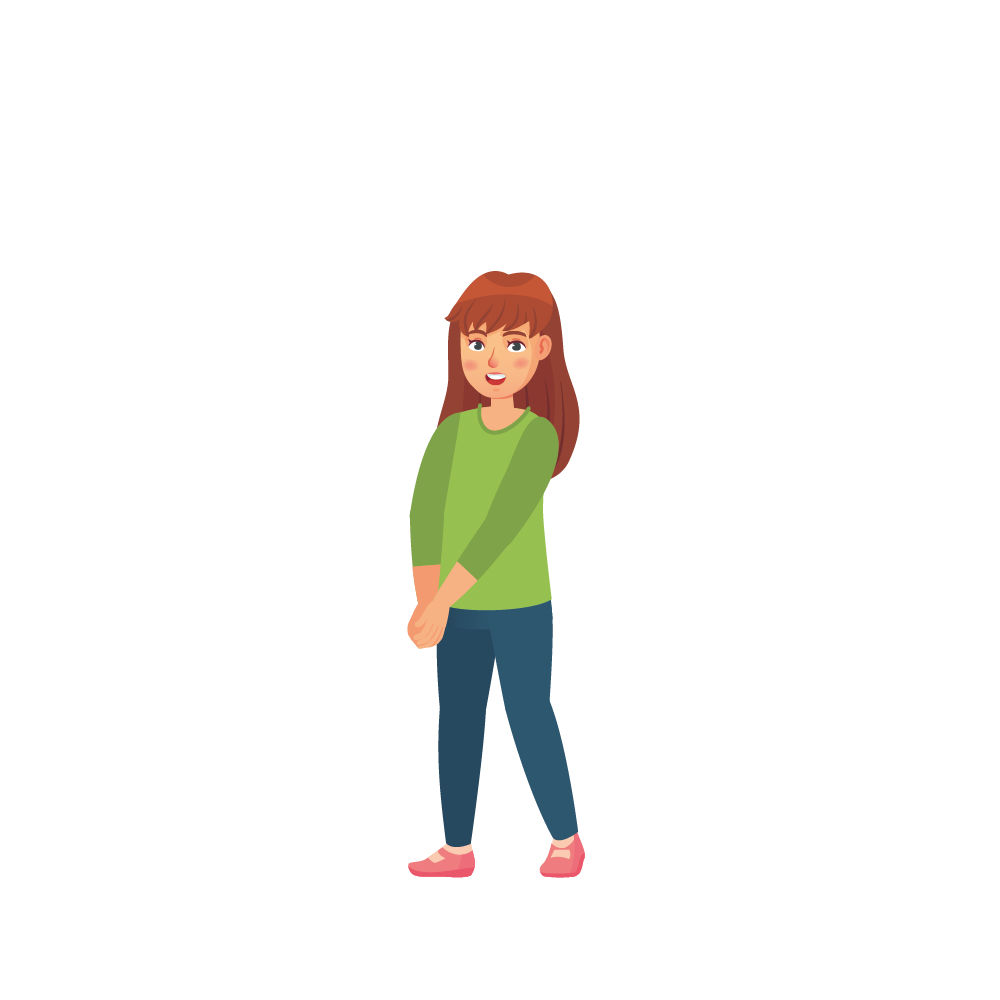

Lught-thie
dooinney
ben

inneen
mac
cloan
ennym
Çhalse ta'n ennym orrym.
Ta mee enmyssit Çhalse.
Ta
my
ven
enmyssit Aalish.
'my' is a
possessive pronoun
that changes the first letter of the word that follows.